Gráficos elegantes con ggplot2
Programación y métodos estadísticos avanzados en R
Marcelo
Araya-Salas, PhD
“2022-10-14”
ggplot2
An R package specifically designed to produce graphics
Unlike other packages, ggplot2 has its own grammar
The grammar is based on “Grammar of Graphics” (Wilkinson 2005)
Independent modules that can be combined in many forms
This grammar provides high flexibility
Grammar of graphics
The main idea is to start with a base layer of raw data and then add more layers of annotations and statistical summaries. The package allows us to produce graphics using the same structure of thought that we use when designing an analysis, reducing the distance of how we visualize a graphic in the head and the final product.
Learning the grammar will not only be crucial to produce a graph of interest, but also to think about other more complex graphs. The advantage of this grammar is the possibility to create new graphs composed of new combinations of elements.
Graph components
All ggplot2 graphs contain the following components:
- Data - The R object with the information that needs to be plotted
- layers - The specific data that will be plotted (e.g. ‘x’ & ‘y’)
- scale - The range of the data to be included
- coord. - Coordinate system (not used very often)
- facet - determines how to break the data in subplots in a multipanel
- theme - controls the plot style
This components are put together using “+”.
The most common syntax includes the data within the “ggplot” call and a “geom_” layer.
First install/load the package:
Scatter plots
Let’s use the “iris” data set to create scatter plots:

This plot is defined by 3 components: 1. “data”- iris 1. “aes” - Sepal.length vs Petal.length 1. “layer” - Points (geom)
Aesthetic attributes
We can also add other aesthetic attributes like color, shape and
size. This attributes can be included within aes():
# color by species
ggplot(data = iris, mapping = aes(x = Sepal.Length, y = Petal.Length,
color = Species)) + geom_point()# color and shape by species
ggplot(data = iris, mapping = aes(x = Sepal.Length, y = Petal.Length,
color = Species, shape = Species)) + geom_point()
Note that the aesthetic arguments can also be included in the “geom” layer:
ggplot(data = iris, mapping = aes(x = Sepal.Length, y = Petal.Length)) +
geom_point(aes(color = Species, shape = Species))
We can also include a fixed value:
Some attributes work better with some data types:
- Color and shape: categorical variables
- Size: continuous variables
Exercise 1
Using the “hylaeformis” data set:
# read from website
hylaeformis_data <- read.csv("https://raw.githubusercontent.com/maRce10/Stats-Workshop-OTS_TB_2022-3/master/data/hylaeformis_data.csv",
stringsAsFactors = FALSE)
# or download manually and read from local file
hylaeformis_data <- read.csv("hylaeformis_data.csv", stringsAsFactors = FALSE)
head(hylaeformis_data, 20)1.1 Create a scatter plot of “duration” vs “meanfreq” (mean frequency)
1.2 Add a aesthetic attribute to show a different color for each locality
1.3 Add another aesthetic attribute to show “dfrange” (dominant frequency range) as the shape size
Multipanel plots (Facetting)
- Another way to visualize categorical variables
- Allows to create multipanel plots for each level of the variable
- 2 types: “grid” & “wrap”
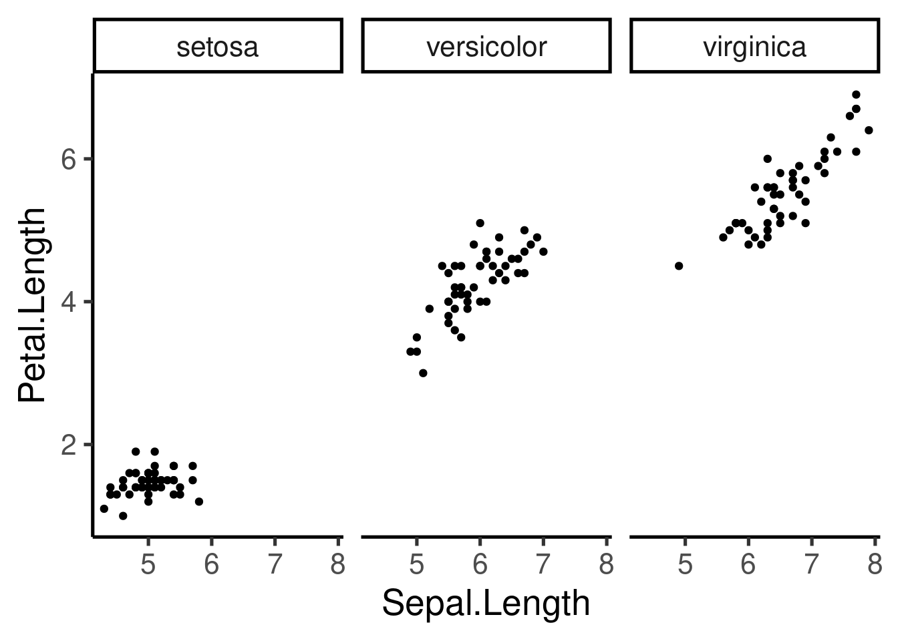

The scale can be fixed or free for the x and y axis, and the number of columns and rows can be modified:
# free x
ggplot(iris, aes(Sepal.Length, Petal.Length)) + geom_point() + facet_wrap(~Species,
scales = "free_x")
# free x and 3 rows
ggplot(iris, aes(Sepal.Length, Petal.Length)) + geom_point() + facet_wrap(~Species,
scales = "free_y", nrow = 3)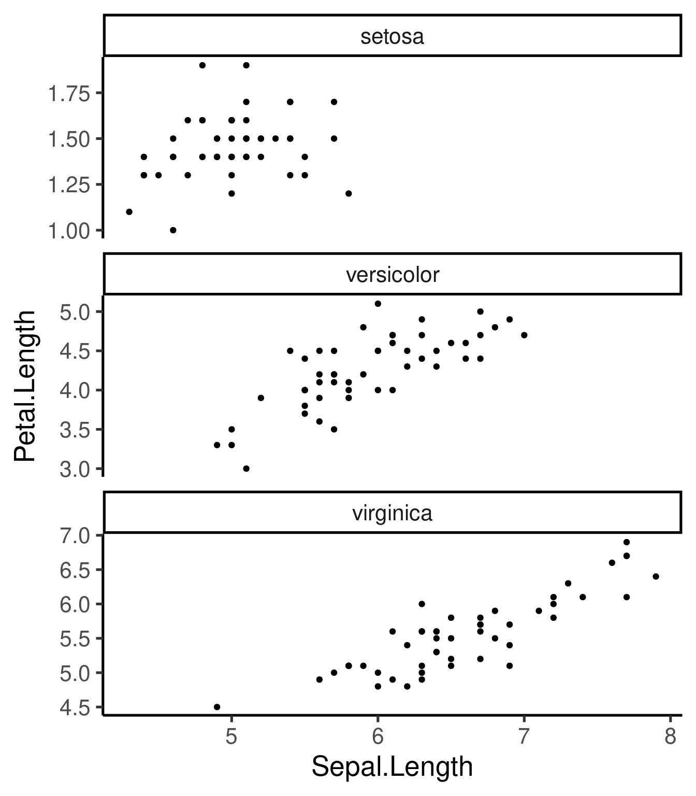
# both free and 2 rows
ggplot(iris, aes(Sepal.Length, Petal.Length)) + geom_point() + facet_wrap(~Species,
scales = "free", nrow = 2)
Note that we can also saved the basic component as an R object and add other components later in the code:
p <- ggplot(iris, aes(Sepal.Length, Petal.Length)) + geom_point()
p + facet_wrap(~Species, scales = "free_x", nrow = 3)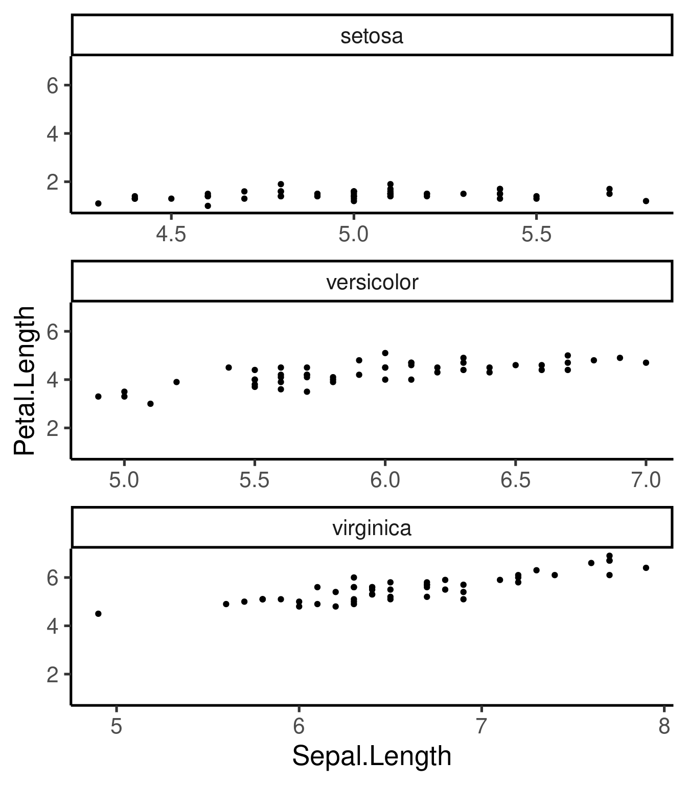
Additional “geoms”
geom_smooth()- adds best fit lines (including CI)geom_boxplot()geom_histogram()&geom_freqpoly()- frequency distributionsgeom_bar()- frequency distribution of categorical variablesgeom_path()&geom_line()- add lines to scatter plots
geom_smooth()
Best fit regression lines can be added with
geom_smooth():
# smoother and CI
ggplot(iris, aes(Sepal.Length, Petal.Length)) + geom_point() + geom_smooth(method = "lm") +
facet_wrap(~Species, scales = "free", nrow = 3)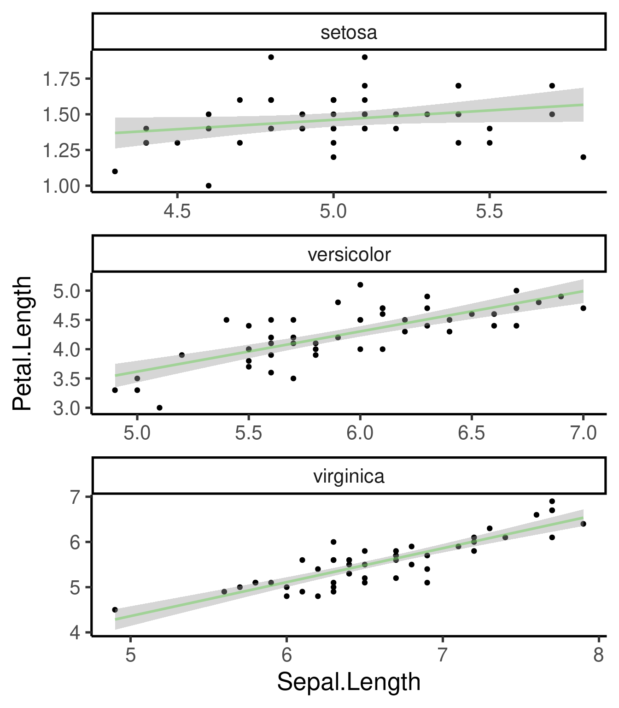
# without CI
ggplot(iris, aes(Sepal.Length, Petal.Length)) + geom_point() + geom_smooth(method = "lm",
se = FALSE) + facet_wrap(~Species, scales = "free", nrow = 3)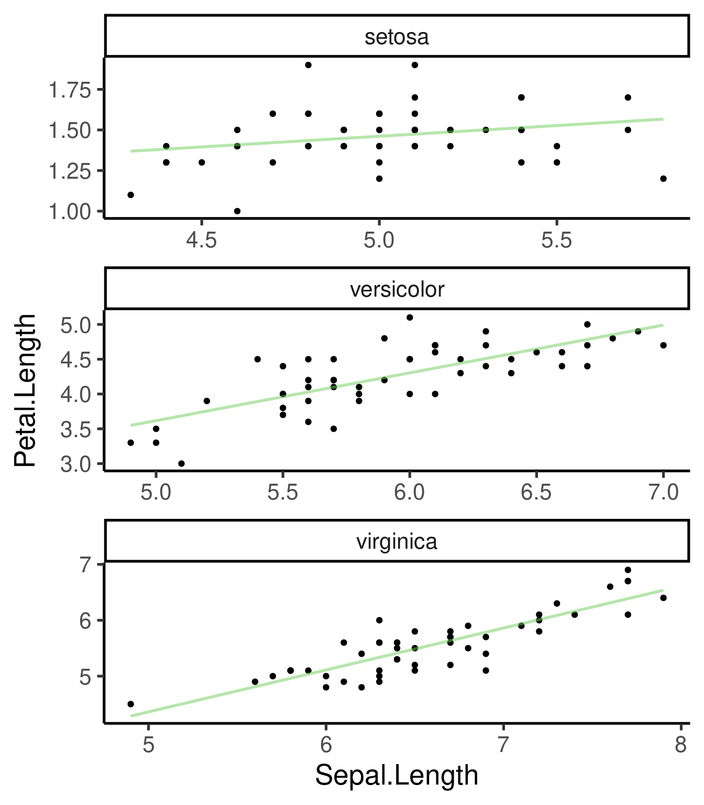
Exercise 2
Using the “msleep” example data set:
2.1 Create a scatter plot of “bodywt”(body weight) vs “brainwt” (brain weight)
2.2 Add “order” as a color aesthetic
2.3 Add a “facet” component to split plots by order using free scales
2.4 Remove the orders with less than 4 species in the data set and make a plot similar to 2.3
2.5 Add a smooth line to each plot in the panel
Boxplots
Again, it only takes a new “geom” component to create a boxplot:
An interesting alternative are the violin plots:

Histograms
Same thing with histrograms and frequency plots:

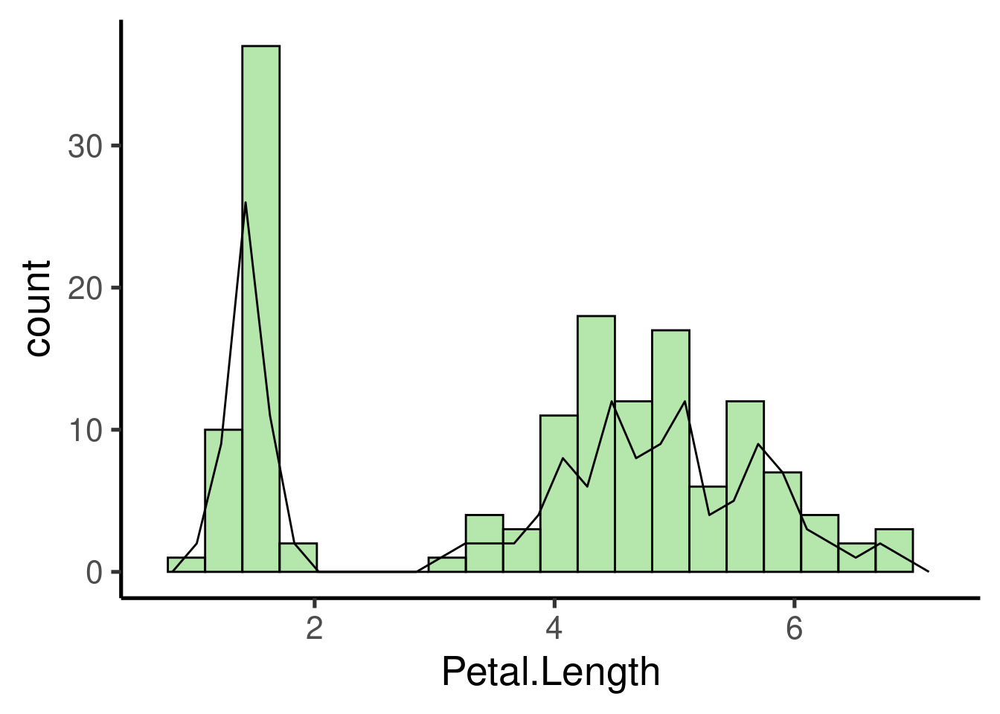
We can control the width of the bars:
ggplot(iris, aes(Petal.Length)) + geom_histogram(binwidth = 1, fill = adjustcolor("red2",
alpha.f = 0.3))## Warning: Duplicated aesthetics after name
## standardisation: fill
And compare the distribution of different groups within the same histogram:


Customizing ggplots
Besides the basic functions (e.g. components) described above, ggplot has many other tools (both arguments and additional functions) to further customize plots. Pretty much every thing can be modified. Here we see some of the most common tools.
Themes
ggplot2 comes with some default themes that can be easily applied to modified the look of our plots:


Most themes differ in the use of grids, border lines and axis labeling patterns.
Axis customization
Axis limits can be modified as follows:

ggplot(iris, aes(Sepal.Length, Petal.Length, col = Species)) + geom_point() +
xlim(c(0, 10)) + ylim(c(0, 9))
Axis can also be transformed:
ggplot(iris, aes(Sepal.Length, Petal.Length, col = Species)) + geom_point() +
scale_x_continuous(trans = "log") + scale_y_continuous(trans = "log2")
or reversed:

Saving ggplots
ggplots can be exported as image files using the ggsave
function:
ggplot(data = msleep[msleep$order %in% names(tab)[tab > 5], ], mapping = aes(x = bodywt,
y = brainwt)) + geom_point() + facet_wrap(~order, scales = "free")## Warning: Removed 21 rows containing missing values
## (geom_point).
## Warning: Removed 21 rows containing missing values
## (geom_point).
The image file type will be identify by the extension in the file name
Additional axis customizing:
# Log2 scaling of the y axis (with visually-equal spacing)
require(scales)
p + scale_y_continuous(trans = log2_trans())
# show exponents
p + scale_y_continuous(trans = log2_trans(), breaks = trans_breaks("log2",
function(x) 2^x), labels = trans_format("log2", math_format(2^.x)))
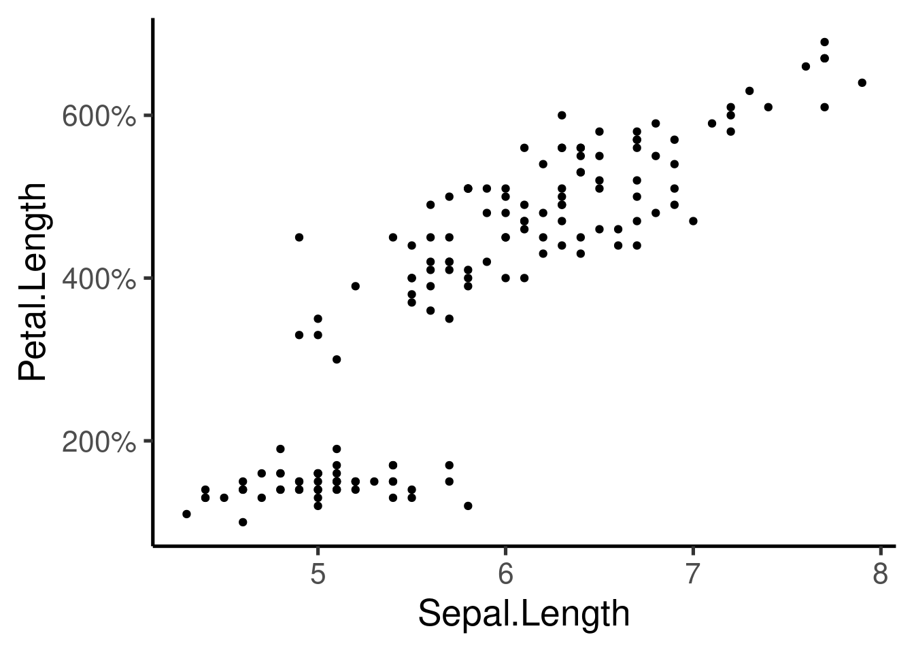
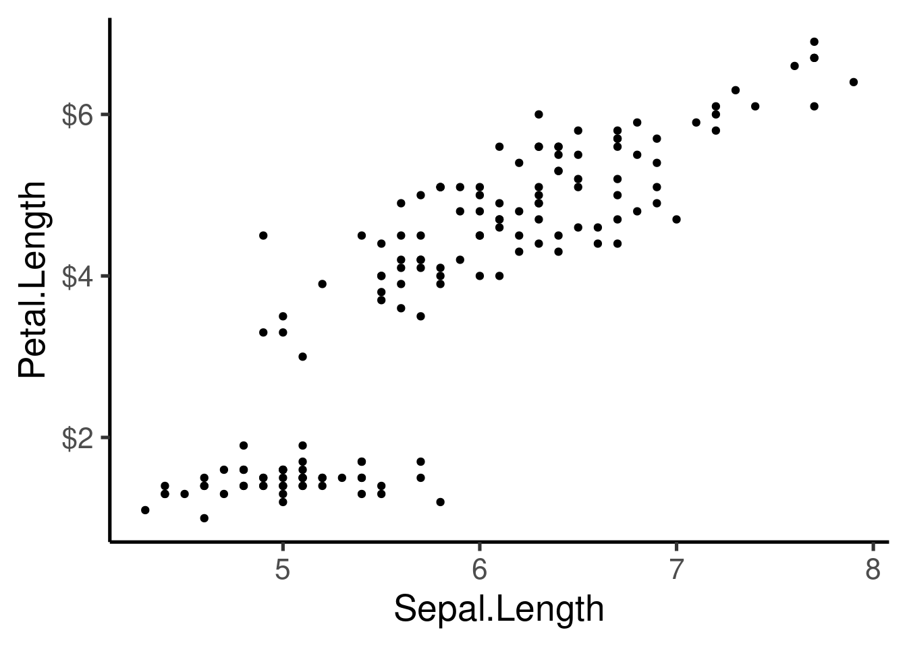

### Agregar 'tick marks' ###
# Cargar librerías
library(MASS)
data(Animals)
# x and y axis are transformed and formatted
p2 <- ggplot(Animals, aes(x = body, y = brain)) + geom_point(size = 4) +
scale_x_log10(breaks = trans_breaks("log10", function(x) 10^x),
labels = trans_format("log10", math_format(10^.x))) + scale_y_log10(breaks = trans_breaks("log10",
function(x) 10^x), labels = trans_format("log10", math_format(10^.x))) +
theme_bw()
# log-log plot without log tick marks
p2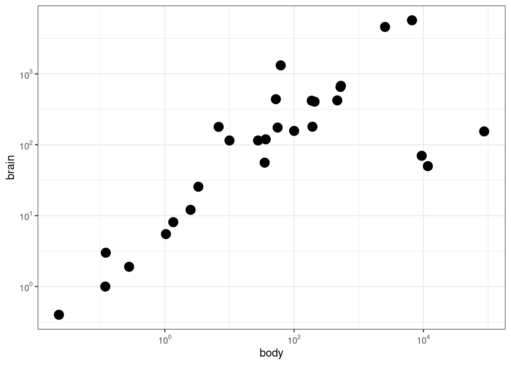
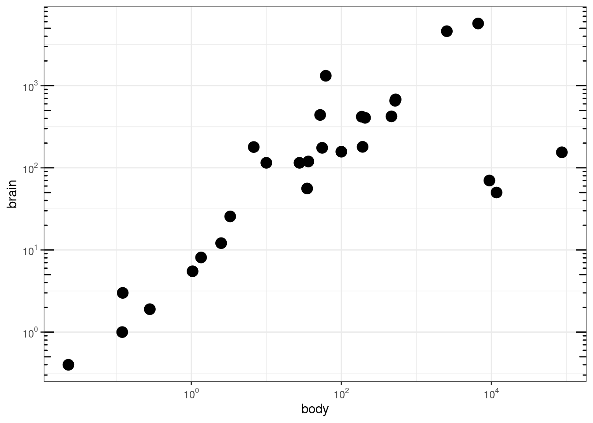
Other graphs
Many other types of graphs can be generated. Here I show a single example of cool contour and “heatmap” graphs:
| eruptions | waiting |
|---|---|
| 3.60 | 79 |
| 1.80 | 54 |
| 3.33 | 74 |
| 2.28 | 62 |
| 4.53 | 85 |
| 2.88 | 55 |

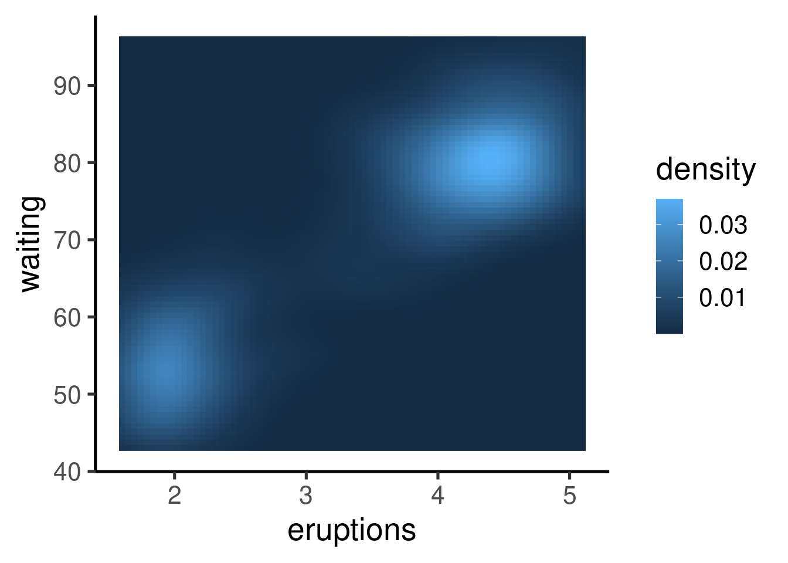
Other R graphing packages
- ggvis (interactive ggplots)
- vcd (Warnes 2015)
- plotrix (Lemon et al. 2006)
- gplots (Warnes 2015)
Check the CRAN Graphics Task View for a more comprehensive list of graphical tools in R.
References
- Lemon J (2006) Plotrix: a package in the red light district of R. R-News 6(4):8–12
- Warnes GR, Bolker B, Bonebakker L, Gentleman R, Liaw WHA, Lumley T, Maechler M, Magnusson A, Moeller S, Schwartz M, Venables B (2015) gplots: various R programming tools for plotting data. R package version 2.17.0. https://CRAN.R-project.org/package=gplots
- Wickham H (2010) A layered grammar of graphics. J Comput Graph Stat 19(1):3–28
- Wilkinson L (2005) The grammar of graphics. Statistics and computing, 2nd edn. Springer, New York
Información de la sesión
## R version 4.1.1 (2021-08-10)
## Platform: x86_64-pc-linux-gnu (64-bit)
## Running under: Ubuntu 20.04.2 LTS
##
## Matrix products: default
## BLAS: /usr/lib/x86_64-linux-gnu/blas/libblas.so.3.9.0
## LAPACK: /usr/lib/x86_64-linux-gnu/lapack/liblapack.so.3.9.0
##
## locale:
## [1] LC_CTYPE=es_ES.UTF-8
## [2] LC_NUMERIC=C
## [3] LC_TIME=es_CR.UTF-8
## [4] LC_COLLATE=es_ES.UTF-8
## [5] LC_MONETARY=es_CR.UTF-8
## [6] LC_MESSAGES=es_ES.UTF-8
## [7] LC_PAPER=es_CR.UTF-8
## [8] LC_NAME=C
## [9] LC_ADDRESS=C
## [10] LC_TELEPHONE=C
## [11] LC_MEASUREMENT=es_CR.UTF-8
## [12] LC_IDENTIFICATION=C
##
## attached base packages:
## [1] stats graphics grDevices utils datasets
## [6] methods base
##
## other attached packages:
## [1] scales_1.2.0 MASS_7.3-54
## [3] emo_0.0.0.9000 viridis_0.6.2
## [5] viridisLite_0.4.0 xaringanExtra_0.7.0
## [7] ggplot2_3.3.6 RColorBrewer_1.1-3
## [9] kableExtra_1.3.4 knitr_1.39
##
## loaded via a namespace (and not attached):
## [1] httr_1.4.3 sass_0.4.1
## [3] pkgload_1.2.4 splines_4.1.1
## [5] jsonlite_1.8.0 bslib_0.3.1
## [7] brio_1.1.3 assertthat_0.2.1
## [9] highr_0.9 yaml_2.3.5
## [11] remotes_2.4.2 sessioninfo_1.2.2
## [13] lattice_0.20-44 pillar_1.8.0
## [15] glue_1.6.2 uuid_1.1-0
## [17] digest_0.6.29 rvest_1.0.2
## [19] colorspace_2.0-3 Matrix_1.3-4
## [21] htmltools_0.5.3 pkgconfig_2.0.3
## [23] devtools_2.4.3 purrr_0.3.4
## [25] webshot_0.5.3 processx_3.6.1
## [27] svglite_2.1.0 tibble_3.1.8
## [29] mgcv_1.8-36 farver_2.1.1
## [31] generics_0.1.2 usethis_2.1.6
## [33] ellipsis_0.3.2 cachem_1.0.6
## [35] withr_2.5.0 cli_3.3.0
## [37] magrittr_2.0.3 crayon_1.5.1
## [39] memoise_2.0.1 evaluate_0.15
## [41] ps_1.7.1 fs_1.5.2
## [43] fansi_1.0.3 nlme_3.1-152
## [45] xml2_1.3.3 pkgbuild_1.3.1
## [47] textshaping_0.3.6 rsconnect_0.8.26
## [49] tools_4.1.1 prettyunits_1.1.1
## [51] formatR_1.12 lifecycle_1.0.1
## [53] stringr_1.4.0 munsell_0.5.0
## [55] callr_3.7.0 isoband_0.2.5
## [57] compiler_4.1.1 jquerylib_0.1.4
## [59] systemfonts_1.0.4 rlang_1.0.4
## [61] grid_4.1.1 rstudioapi_0.13
## [63] htmlwidgets_1.5.4 crosstalk_1.2.0
## [65] labeling_0.4.2 rmarkdown_2.14
## [67] testthat_3.1.4 gtable_0.3.0
## [69] DBI_1.1.3 R6_2.5.1
## [71] lubridate_1.8.0 gridExtra_2.3
## [73] dplyr_1.0.9 fastmap_1.1.0
## [75] utf8_1.2.2 rprojroot_2.0.3
## [77] ragg_1.2.2 desc_1.4.1
## [79] stringi_1.7.8 vctrs_0.4.1
## [81] leaflet_2.1.1 tidyselect_1.1.2
## [83] xfun_0.31